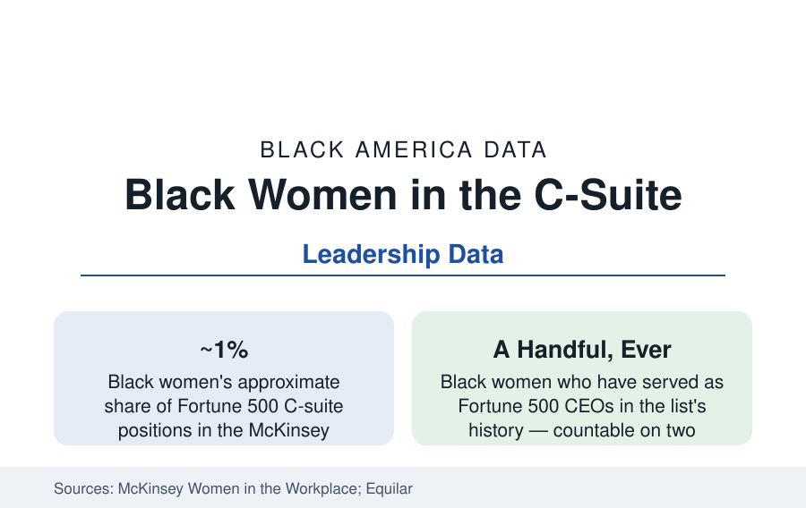

Black Business
Black Women in Corporate Leadership: The C-Suite's Smallest Number
Black women hold about one percent of Fortune 500 C-suite roles and have led a handful of its companies. The McKinsey and Equilar data.

The smallest leadership statistic in the business data belongs to Black women in the corporate suite: roughly one percent of Fortune 500 C-suite roles in the McKinsey pipeline series, a low-single-digit share of board seats, and a count of Black women who have served as Fortune 500 chief executives that fits on two hands across the list's entire history. This article reports the corporate leadership data for the population that simultaneously posts the nation's highest rates of business formation and educational attainment growth.
The Pipeline in Numbers
McKinsey's Women in the Workplace — the largest annual pipeline dataset in corporate America — has made the pattern mechanical to read: for every hundred men promoted to manager, the series has repeatedly found Black women promoted in the fifties-to-sixties range, and the compounding losses reproduce themselves at every rung until the C-suite's one percent is an arithmetic outcome rather than a mystery. Black women are hired into entry-level corporate roles at respectable shares (the college pipeline of the education profiles) and exit or stall at the first promotion at rates the data isolate as the system's single largest leak — the 'broken rung,' in the report's phrase, falls heaviest here. The sponsorship data (as distinct from mentorship — the advocacy that actually moves promotions) and the P&L-line variable (Black women executives concentrated in staff functions — HR, legal, communications, DEI — rather than the revenue lines from which CEOs are drawn, in the ELC and Catalyst analyses) complete the mechanism.
Boards: The Post-2020 Surge and Its Plateau
Board data tell the era's cleanest before-and-after: Black women held under two percent of Fortune 500 board seats in the late 2010s in the Equilar and ISS counts; the post-2020 appointment wave (when Black directors of both sexes were appointed at unprecedented rates — Black appointees forming a third or more of new directors in the peak years' Spencer Stuart data) lifted Black women's seat share into the three-to-four percent band, with a visible plateau and partial reversion in the most recent appointment classes as the pressure cycle faded. The legislative experiment (California's board-diversity statutes and their invalidation in court) and the disclosure regimes (the Nasdaq rule's parallel litigation) form the policy file; the committee-assignment data (audit and compensation chairs — the power seats — lagging the headline counts) the quality file.
The CEOs: A Short, Documented List
The chief executive roll is short enough to be a paragraph of names the business press recites: Ursula Burns at Xerox (the first Black woman Fortune 500 CEO, 2009), followed across the years by a list including Rosalind Brewer (Walgreens, Sam's Club before it), Thasunda Duckett (TIAA), Debra Lee's BET tenure in media, and a small number of others at the list's edges and in acting roles — at any given recent moment, two or three of five hundred. The analyses of their paths note the common structures: long internal climbs through operating roles, crisis or transformation mandates at appointment (the 'glass cliff' pattern the research literature measures across underrepresented CEOs), and tenures graded against turnaround baselines their predecessors set. The tier beneath — division presidents and the Fortune 1000's C-suites — thickens the count modestly without changing its order of magnitude.
The Paradox the Data Pose
The juxtaposition is the article the numbers write themselves: the population with the fastest-growing educational attainment in the census data (the graduate profile's Black women earning degrees at the system's highest rates of increase), the highest business-formation rates in the entrepreneurship data (the women-owned profile's 300,000-plus employer firms and millions of nonemployer ventures — substantially a corporate-exit phenomenon in the founder surveys' motivations), and one percent of the C-suite. The founder data and the pipeline data describe the same women at different doors: the corporate door's throughput is the measured variable, and the startup economy's formation surge is, in part, its overflow. The Executive Leadership Council and the Black corporate-network institutions exist on this file, their membership data mapping the senior population the pipelines leak.
Reading the Leadership Data
One percent is not a pipeline problem in the usual sense — the pipeline is full, credentialed, and climbing; it is a conversion problem, located at the first promotion and the line-role allocation, measured annually by the largest dataset in the field and moving at decimal pace. Black women run more businesses than any demographic in America and a rounding error of its largest corporations; the distance between those two facts is the most efficient summary in this reference of where the ceiling actually sits.
More in Black Business
Black-Owned Businesses: Counts, Receipts, and the Representation Gap
About 161,000 Black-owned employer firms and three million solo ventures: how the Census Bureau counts Black business ownership, where firms concentrate, and the gap between population share and business share.
Black Median Net Worth: The Wealth Gap in Federal Reserve Data
The Federal Reserve puts Black median family net worth at $44,900, against $285,000 for White families — about 16 cents on the dollar. The widest gap in economic data.
Black Buying Power: The $1.8 Trillion Consumer Economy
Black buying power is estimated at about $1.8 trillion — larger than the economy of most nations. What the figure measures, who produces it, and what it buys.
Source: McKinsey & Company, Women in the Workplace annual reports; Equilar and Fortune 500 board data; Catalyst research; Executive Leadership Council data.